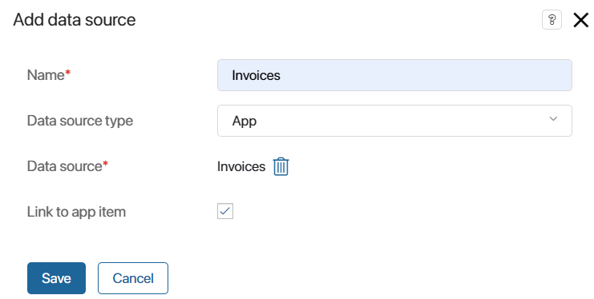
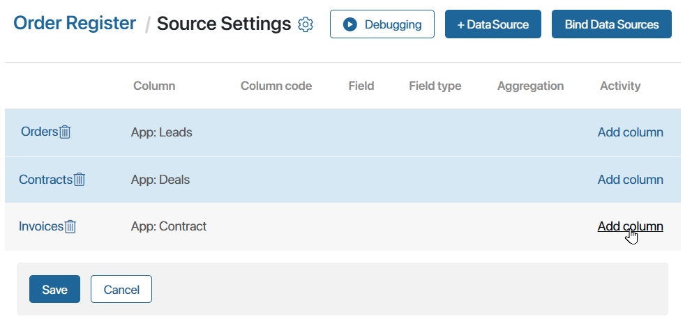
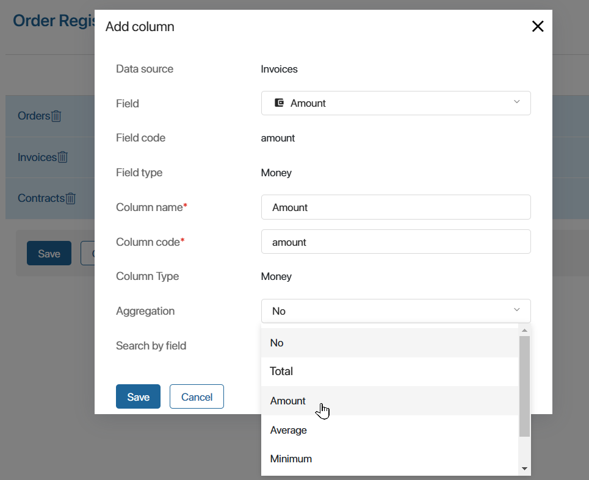
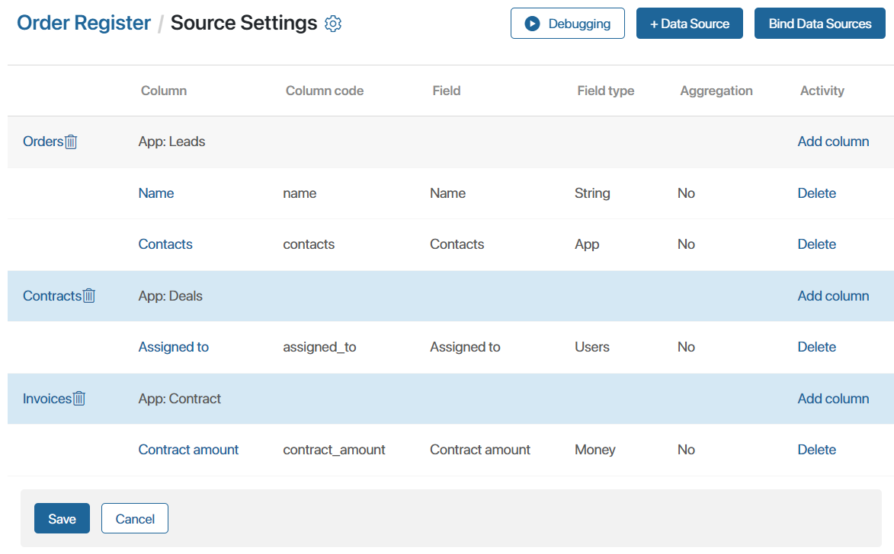
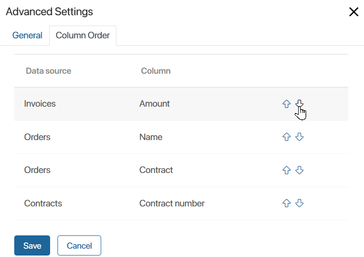

A source is a system component whose data will be displayed on the report page in the form of a table. You can add multiple components to a report and link them to each other. The sources can be:
- System and custom apps of the Standard, Event, or Document types.
- System and custom business processes.
A contract cannot be used as a source. Using one report as a source for another is not available.
To combine data from multiple sources in the report, components should be linked to each other in pairs by a common field. You can configure the binding between sources by type:
- App—app.
- Business process—app.
- Business process—business process.
Data binding from two components in a report is performed by using the fields for binding, which are selected from the source context.
Before adding sources to the report, define by which fields they will be linked. Create these fields in the source context and enable the search and sort option for them.
The available ways of linking sources and types of fields for linking can be found in Bind report source apps.
Select sources
- Open the report and in the center of the page, click Add Source.
- In the upper right corner of the page that opens, click +Data Source.
- Specify the source name and select an app from any workspace in the system.

- Name*. Specify the name of the source to be displayed on the report settings page.
- Data source type. Add a system component whose context will be displayed in the report: app or business process.
- Data source*. Select any app or process in the system.
- Link to app item. The option is available for the App type source. When the option is enabled, the Name field can be added to the report table from the app context, and it will be displayed as a link to the item. By clicking on the link, users will be able to navigate to the page of the item added to the report.
- Click Save.
- In this way, add all sources whose data you want to display in the report table.
You can add more than two system components to a report. To correctly configure the report, at least one binding to another source is created for each source.
After you have specified all sources, customize the columns of the report table.
Add table columns
Each table column in the report is an added property from the context of the specified source.
In the column, you can display the value of a property or set the aggregation of data for this property from several items. For example, if a contract contains several invoices, you can display the amount for all the items.
If the search and sort option is enabled for a property added as a column, it can be used as a search filter on the report page.
To add data to the table, follow these steps:
- Next to the source name, click Add column.

- Fill in the fields in the opened window:

- Data source. The field displays the name of the selected source.
- Field. Select a property from the context of the app or process specified as the source.
- Field code, Field type. The values are filled in automatically according to the selected field from the source context.
- Column name*. Specify the name of the column to be displayed in the table.
- Column code*. The code is necessary for exporting data from the column and is used when creating a template for downloading the table. The field is filled automatically by the specified column name. The value can be changed manually to make the code of each column added to the report unique.
- Aggregation. This option allows you to apply aggregation functions to the data from the source to create summary tables or statistics. You can select Amount, Total, Average, Maximum, or Minimum. The table column will display not the value specified on the item form, but the result of grouping reports from several items that meet the specified condition. For example, you can aggregate order data for each month or calculate total sales for a certain period. If you select No, the table will display the value specified in the source item page.
- Search by field. This option, when selected, indicates that the property will be used as a filter to search for data on the report page. It is turned on automatically if the search and sort option is activated for the field in the source context or data aggregation is set for the column in the report.
- Save the added column.
- Customize the table columns in the same way, specifying properties from all added sources.
- You can edit the column name in the table and change the aggregation settings. To do this, click on the added property in the list.
- To remove a column from the table, click Delete next to the property. If you get an error about the broken links between sources, you can add the property again and specify the code of the deleted column.
In the example, the Orders, Contracts, and Invoices source apps have been added to the report. The table shows the fields with the order name, contractor, contract name, and invoice amount. The settings on the page look as follows:

Set additional table settings
In the additional settings, you can set the order in which columns are displayed in the table, as well as the frequency of data updates in the table. To do this, open the advanced table settings:
- Click the gear icon in the upper left corner of the Source Settings page.
- In the opened window, specify the settings on the two available tabs:
- General. In the Time before data is refreshed (in minutes) field, specify the time after which changes made to the sources can be displayed in the report. The default value is 5 minutes. If you navigate to the report page and then create source items, you can refresh the table and display the new data after 5 minutes.
The minimum value is 1 minute. To refresh the table without delays, contact BRIX technical support to set the value 0 in this field. Please note that this option will cause additional load on the system.
- Column Order. Customize the order of columns in the report table. To do this, click the up or down arrow icon next to the column name.

- Save the additional table settings.
After selecting sources and their properties to display in the report, you have to bind the sources, i.e. combine different components, such as items from several apps, into a single data table. Without the binding, you will see an error message when you save the list of sources.
Found a typo? Select it and press Ctrl+Enter to send us feedback